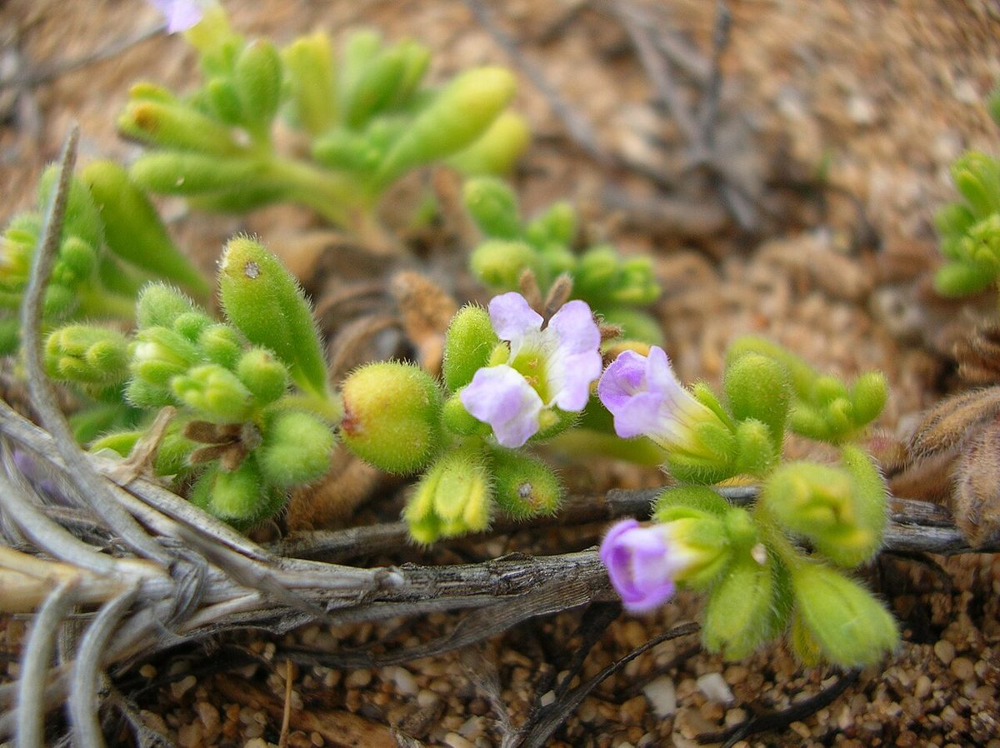

COMMON Beach strand Dune
Nama sandwicensis
hinahina kahakai · Hawaiian nama


Quick facts
| Family | Boraginaceae |
|---|---|
| Scientific name | Nama sandwicensis |
| Hawaiian name(s) | hinahina kahakai |
| English name(s) | Hawaiian nama |
| Status | Endemic |
| Conservation | — |
| Coastal zones | Beach strand Dune |
| Occurrence | Hawaiian endemic prostrate herb of coastal sand and coral flats. On Kauaʻi's roadless coast it is a component of open silvery mat vegetation on stable strand and low back-beach dunes; less common than pōhuehue or ʻakiʻaki, but distinctive where it occurs. |
How to identify
- Growth form
- Prostrate to weakly ascending perennial herb, forming small silvery mats or diffuse cushions rooted from a taproot.
- Size
- Mats 20–60 cm across; only a few cm tall.
- Leaves
- Alternate to sub-opposite, narrow linear to linear-oblanceolate, 1–4 cm long, densely covered in short white silky hairs — giving the whole plant a silvery-grey cast diagnostic of Hawaiian "hinahina" plants.
- Flowers
- Small (~5 mm), white to pale pinkish, 5-lobed, funnel-shaped, solitary or in small axillary clusters. Not showy but visible against silvery foliage.
- Fruit / seed
- A small dry capsule with many minute seeds.
- Bark / stem
- Slender silvery-hairy stems that trail along the ground.
- Where it sits on the coast
- Open sand strand and stabilized low dune; often intermixed with pōhuehue or Sesuvium.
Clinchers (features that lock the ID)
- Silvery-hairy narrow linear leaves crowded on prostrate stems.
- Small white 5-lobed funnelform flowers solitary or in small axillary clusters.
- Prostrate silvery mat on coastal sand — smaller and finer-leaved than heliotrope species.
Look-alikes
- Heliotropium anomalum (hinahina kū kahakai — a different hinahina) — Heliotropium anomalum is also a silvery Hawaiian prostrate "hinahina," but its leaves are broader-oblanceolate and crowded in dense rosettes at branch tips, and its small white flowers sit in coiled (scorpioid) cymes rather than solitary or in small axillary clusters. Both share the "hinahina" name in Hawaiian usage — flag both possibilities in the field and check flower arrangement.
- Vitex rotundifolia (pōhinahina) — Also silvery and prostrate, but with rounded (not linear) opposite leaves that smell aromatic when crushed, and violet-blue tubular flowers rather than tiny white ones.
- Achyranthes splendens (introduced, absent from most roadless coast) — Erect, not prostrate; wide silvery leaves in opposite pairs; different life form entirely — mentioned here only because it, too, is called a Hawaiian "silvery-leaved" plant.
Ecology
Sand-stabilizing endemic herb; its silvery hairs are a xerophytic adaptation reducing water loss and reflecting salt spray. Rare enough on the main-island coast to be a satisfying find for a careful observer. [16], [20], [21], [22], [23]
Cultural significance
Hinahina — silvery — is a Hawaiian botanical name shared by several small coastal plants (Heliotropium anomalum, Achyranthes splendens on other islands, and this endemic Nama). The shared name reflects a cultural recognition of the silvery-mat coastal community; framed respectfully.